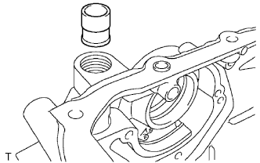
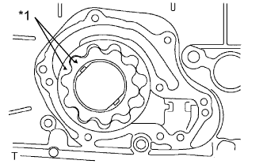
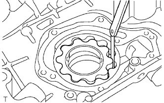
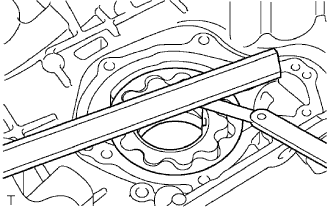
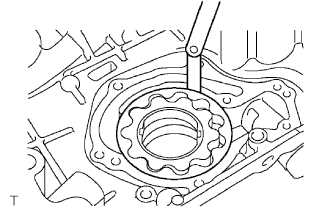

МАСЛЯНЫЙ НАСОС > ПРОВЕРКА |
| 1. ПРОВЕРЬТЕ ПЕРЕПУСКНОЙ КЛАПАН МАСЛЯНОГО НАСОСА |
|  |
Смажьте перепускной клапан моторным маслом и вставьте его в гнездо клапана. Убедитесь, что перепускной клапан свободно опускается в гнездо под действием собственного веса.
Если клапан не опускается свободно, замените его. Если требуется, замените крышку цепного привода газораспределительного механизма в сборе.
| 2. ПРОВЕРЬТЕ СОСТОЯНИЕ ШЕСТЕРЕН МАСЛЯНОГО НАСОСА |
|  |
Установите шестерни в корпус масляного насоса метками наружу. Шестерни должны вращаться плавно.
| *1 | Метка совмещения |
|  |
Проверьте зазор между вершинами зубьев шестерен.
С помощью комплекта плоских щупов измерьте зазор между вершинами зубьев ведущей и ведомой шестерен, как показано на рисунке.
|  |
Проверьте боковой зазор.
С помощью комплекта плоских щупов и прецизионной поверочной линейки измерьте зазор между шестернями и прецизионной поверочной линейкой, как показано на рисунке.
|  |
Проверьте зазор между шестерней и корпусом.
С помощью комплекта плоских щупов измерьте зазор между корпусом масляного насоса и ведомой шестерней, как показано на рисунке.